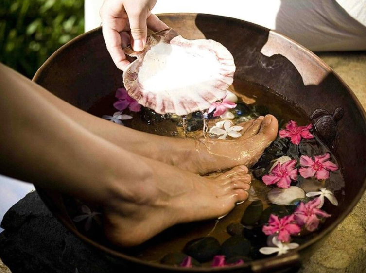

“Soriya Thai Room”
Salon Soriya Thai Room tradicionalne tajlandske masaže ugnijezdio se u podnožju staroga burga Medvedgrada, podno zelene oaze zagrebačke gore Sljeme.
Smješten malo dalje od najužeg, urbanog centra grada, u prirodnom okruženju zelenila i voda, ovoj, više od 2500 godina drevnoj tehnici iscjeljivanja duha i tijela dodirom ruku, pogoduje prisustvo brojnih šumećih izvora, koji potiču izvore energije tijela i vrijednosti osjećaja.
Jer, tehnika tradicionalne tajlandske masaže, svojom životnošću, nalik je životnosti brojnih izvora i potoka koji ovdje vječno teku i svojim šumom i bistrinom, stoljećima unose osjećaj mira i harmonije.
Želja nam je da naši klijenti osjete opuštajuću snagu dodira ruku koje svojom iscjeliteljskom moći, nalik izvorskom toku, prodiru u blokirane energetske kanale tijela, pokrećući blokiranu energiju duha i tijela.
Tradicionalna tajlandska masaža cjeloživotno je učenje, kultura i sastavni dio života naših terapeutkinja, te uz postojeće certificate za obuku i iskustvo, u naš svijet donose dio autentičnog, civilizacijskog dobra naroda, dašak dalekog Tajlanda.
Nogama uronjenim u tajlandsku zdjelicu mirisne vode i cvijeća započinje vaš mali, rajski doživljaj odabrane masaže, a mirisnim čajem i voćem, posluženim u opuštajućem plavom salonu bazena, poslije masaže, saune ili tuširanja, završava.

"Masaža nije samo luksuz, ona je način za zdraviji i sretniji život."